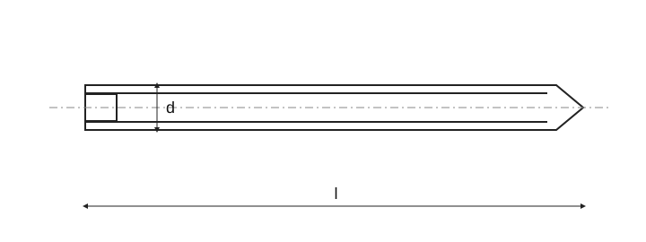

Stavěcí šrouby s drážkou a hrotem
Historický podklad; číselné hodnoty a výjimky nejsou úplně ověřené proti platné normě.

Stavěcí šrouby s drážkou a hrotem · Rozměry
| Parametr | M1,2 | M1,6 | M2 | M2,5 | M3 | (M3,5) | M4 | M5 | M6 | M8 | M10 | M12 |
|---|---|---|---|---|---|---|---|---|---|---|---|---|
| d 3 | = d₃ (malý průměr) | = d₃ (malý průměr) | = d₃ (malý průměr) | = d₃ (malý průměr) | = d₃ (malý průměr) | = d₃ (malý průměr) | = d₃ (malý průměr) | = d₃ (malý průměr) | = d₃ (malý průměr) | = d₃ (malý průměr) | = d₃ (malý průměr) | = d₃ (malý průměr) |
| d 4 max. | 0,12 | 0,16 | 0,2 | 0,25 | 0,3 | 0,35 | 0,4 | 0,5 | 1,5 | 2,0 | 2,5 | 3,0 |
| n | 0,2 | 0,25 | 0,25 | 0,4 | 0,4 | 0,5 | 0,6 | 0,8 | 1 | 1,2 | 1,6 | 2 |
| n _min. | 0,26 | 0,31 | 0,31 | 0,46 | 0,46 | 0,56 | 0,66 | 0,86 | 1,06 | 1,26 | 1,66 | 2,06 |
| n _max. | 0,4 | 0,45 | 0,45 | 0,6 | 0,6 | 0,7 | 0,8 | 1 | 1,2 | 1,51 | 1,91 | 2,31 |
| t _min. | 0,4 | 0,56 | 0,64 | 0,72 | 0,8 | 0,96 | 1,12 | 1,28 | 1,6 | 2,0 | 2,4 | 2,8 |
| t _max. | 0,52 | 0,74 | 0,84 | 0,95 | 1,05 | 1,21 | 1,42 | 1,63 | 2,0 | 2,5 | 3,0 | 3,6 |
Stavěcí šrouby s drážkou a hrotem · Orientační hmotnosti
| l [mm] | M1,2 [g/1000] | M1,6 [g/1000] | M2 [g/1000] | M2,5 [g/1000] | M3 [g/1000] | (M3,5) [g/1000] | M4 [g/1000] | M5 [g/1] | M6 [g/1] | M8 [g/1] | M10 [g/1] | M12 [g/1] |
|---|---|---|---|---|---|---|---|---|---|---|---|---|
| 2 | 9 | 17 | — | — | — | — | — | — | — | — | — | — |
| 3 | 16 | 29 | 42 | 60 | — | — | — | — | — | — | — | — |
| 4 | 23 | 41 | 60 | 90 | 127 | — | — | — | — | — | — | — |
| 5 | 29 | 53 | 179 | 120 | 171 | 217 | 266 | — | — | — | — | — |
| 6 | 36 | 64 | 198 | 150 | 215 | 277 | 343 | 266 | — | — | — | — |
| 8 | — | 87 | 135 | 210 | 303 | 396 | 498 | 0,75 | 1,06 | — | — | — |
| 10 | — | — | 167 | 271 | 391 | 515 | 653 | 0,99 | 1,41 | 2,30 | — | — |
| 12 | — | — | — | 331 | 480 | 635 | 808 | 1,24 | 1,76 | 2,94 | 4,28 | — |
| 14 | — | — | — | — | 568 | 754 | 963 | 1,49 | 2,11 | 3,57 | 5,28 | 7,20 |
| 16 | — | — | — | — | 656 | 876 | 1120 | 1,74 | 2,47 | 4,21 | 6,29 | 8,65 |
| 20 | — | — | — | — | — | 1115 | 1430 | 2,23 | 3,17 | 5,49 | 8,30 | 11,56 |
| 25 | — | — | — | — | — | — | — | 2,85 | 4,06 | 7,08 | 10,81 | 15,20 |
| 30 | — | — | — | — | — | — | — | — | 4,94 | 8,67 | 13,32 | 18,84 |
| 35 | — | — | — | — | — | — | — | — | — | 10,26 | 15,83 | 22,48 |
| 40 | — | — | — | — | — | — | — | — | — | 11,86 | 18,34 | 26,11 |
| 45 | — | — | — | — | — | — | — | — | — | — | 20,85 | 29,75 |
| 50 | — | — | — | — | — | — | — | — | — | — | 22,60 | 32,01 |
| 55 | — | — | — | — | — | — | — | — | — | — | — | 35,65 |
| 60 | — | — | — | — | — | — | — | — | — | — | — | 39,29 |
Stavěcí šrouby s drážkou a hrotem · Rozměry
| Parametr | M1,2 | M1,6 | M2 | M2,5 | M3 | (M3,5) |
|---|---|---|---|---|---|---|
| d 3 | = d₃ (malý průměr) | = d₃ (malý průměr) | = d₃ (malý průměr) | = d₃ (malý průměr) | = d₃ (malý průměr) | = d₃ (malý průměr) |
| d 4 max. | 0,12 | 0,16 | 0,2 | 0,25 | 0,3 | 0,35 |
| n | 0,2 | 0,25 | 0,25 | 0,4 | 0,4 | 0,5 |
| n _min. | 0,26 | 0,31 | 0,31 | 0,46 | 0,46 | 0,56 |
| n _max. | 0,4 | 0,45 | 0,45 | 0,6 | 0,6 | 0,7 |
| t _min. | 0,4 | 0,56 | 0,64 | 0,72 | 0,8 | 0,96 |
| t _max. | 0,52 | 0,74 | 0,84 | 0,95 | 1,05 | 1,21 |
Stavěcí šrouby s drážkou a hrotem · Rozměry
| Parametr | M4 | M5 | M6 | M8 | M10 | M12 |
|---|---|---|---|---|---|---|
| d 3 | = d₃ (malý průměr) | = d₃ (malý průměr) | = d₃ (malý průměr) | = d₃ (malý průměr) | = d₃ (malý průměr) | = d₃ (malý průměr) |
| d 4 max. | 0,4 | 0,5 | 1,5 | 2,0 | 2,5 | 3,0 |
| n | 0,6 | 0,8 | 1 | 1,2 | 1,6 | 2 |
| n _min. | 0,66 | 0,86 | 1,06 | 1,26 | 1,66 | 2,06 |
| n _max. | 0,8 | 1 | 1,2 | 1,51 | 1,91 | 2,31 |
| t _min. | 1,12 | 1,28 | 1,6 | 2,0 | 2,4 | 2,8 |
| t _max. | 1,42 | 1,63 | 2,0 | 2,5 | 3,0 | 3,6 |
Stavěcí šrouby s drážkou a hrotem · Orientační hmotnosti
| l [mm] | M1,2 [g/1000] | M1,6 [g/1000] | M2 [g/1000] | M2,5 [g/1000] | M3 [g/1000] | (M3,5) [g/1000] |
|---|---|---|---|---|---|---|
| 2 | 9 | 17 | — | — | — | — |
| 3 | 16 | 29 | 42 | 60 | — | — |
| 4 | 23 | 41 | 60 | 90 | 127 | — |
| 5 | 29 | 53 | 179 | 120 | 171 | 217 |
| 6 | 36 | 64 | 198 | 150 | 215 | 277 |
| 8 | — | 87 | 135 | 210 | 303 | 396 |
| 10 | — | — | 167 | 271 | 391 | 515 |
| 12 | — | — | — | 331 | 480 | 635 |
| 14 | — | — | — | — | 568 | 754 |
| 16 | — | — | — | — | 656 | 876 |
| 20 | — | — | — | — | — | 1115 |
| 25 | — | — | — | — | — | — |
| 30 | — | — | — | — | — | — |
| 35 | — | — | — | — | — | — |
| 40 | — | — | — | — | — | — |
| 45 | — | — | — | — | — | — |
| 50 | — | — | — | — | — | — |
| 55 | — | — | — | — | — | — |
| 60 | — | — | — | — | — | — |
Stavěcí šrouby s drážkou a hrotem · Orientační hmotnosti
| l [mm] | M4 [g/1000] | M5 [g/1] | M6 [g/1] | M8 [g/1] | M10 [g/1] | M12 [g/1] |
|---|---|---|---|---|---|---|
| 2 | — | — | — | — | — | — |
| 3 | — | — | — | — | — | — |
| 4 | — | — | — | — | — | — |
| 5 | 266 | — | — | — | — | — |
| 6 | 343 | 266 | — | — | — | — |
| 8 | 498 | 0,75 | 1,06 | — | — | — |
| 10 | 653 | 0,99 | 1,41 | 2,30 | — | — |
| 12 | 808 | 1,24 | 1,76 | 2,94 | 4,28 | — |
| 14 | 963 | 1,49 | 2,11 | 3,57 | 5,28 | 7,20 |
| 16 | 1120 | 1,74 | 2,47 | 4,21 | 6,29 | 8,65 |
| 20 | 1430 | 2,23 | 3,17 | 5,49 | 8,30 | 11,56 |
| 25 | — | 2,85 | 4,06 | 7,08 | 10,81 | 15,20 |
| 30 | — | — | 4,94 | 8,67 | 13,32 | 18,84 |
| 35 | — | — | — | 10,26 | 15,83 | 22,48 |
| 40 | — | — | — | 11,86 | 18,34 | 26,11 |
| 45 | — | — | — | — | 20,85 | 29,75 |
| 50 | — | — | — | — | 22,60 | 32,01 |
| 55 | — | — | — | — | — | 35,65 |
| 60 | — | — | — | — | — | 39,29 |